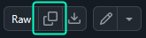

- 下载 the latest version of Hellbomb 脚本 来自 Github 仓库。
- Once the 下载 has finished, launch the executable.
Publicly Editable Page
This page can be edited by anyone. Ensure you fully understand any commands or steps before executing or following them.
This page explains what Hellbomb 脚本 is, where to find it and how to use it.
Hellbomb 脚本 is a community-made diagnostics tool created by Discord user @bobthebuilder5001[1] who is a community hero in the 官员 绝地潜兵 2 Discord.
It is designed to automate common diagnostic steps and system checks for 故障排除 various issues. The script has various functionalities as described in a later 章节.
Hellbomb 脚本 is entirely open 来源 on GitHub, allowing anyone to 查看 the code before running it.
You can also review the project's 安全 tab on GitHub for additional 安全 information.
Instructions are provided in the GitHub README, but the basic steps are summarized below.
⊞ Win + X，然后按下 A 或选择 Windows PowerShell（管理员） 从菜单中。⊞ Win + R，输入 powershell 进入 运行 对话框，然后按 Ctrl + Shift + 进入.powershell 在 Windows 搜索栏中并选择 以管理员身份运行 从右侧的面板中。Invoke-RestMethod https://raw.githubusercontent.com/绝地潜兵2fixes/HellbombScript/refs/heads/主体/Hellbomb%20Script.ps1 | Invoke-Expression
⊞ Win + X，然后按下 A 或选择 Windows PowerShell（管理员） 从菜单中。⊞ Win + R，输入 powershell 进入 运行 对话框，然后按 Ctrl + Shift + 进入.powershell 在 Windows 搜索栏中并选择 以管理员身份运行 从右侧的面板中。
Ctrl + V. 在终端中右键粘贴可能会导致错误。仍然粘贴进入 直到程序运行并出现菜单。根据粘贴方式的不同，您可能需要多次按下。此功能仍处于 alpha 阶段，尚未具备完整功能。已在 Arch Linux 和 CachyOS 上测试。
打开终端并添加以下参数：
sudo paru -S powershell-bin # 安装 PowerShell Core
pwsh # 启动 PowerShell
Invoke-RestMethod https://raw.githubusercontent.com/绝地潜兵2fixes/HellbombScript/refs/heads/主体/Hellbomb%20Script.ps1 | Invoke-Expression
Below is a list of 当前 options:
此选项是脚本的主要功能；它将分析所在计算机并进行各种检查，如硬件和软件。它会标记可能干扰绝地潜兵2运行的软件，检查内存模块以识别潜在的混合模块等。这些输出可以安全地与其他用户共享。
这些选项用于常规诊断。
清除设置（AppData） - 清除 绝地潜兵2 文件夹于 /appdata/arrowhead/ .仅清除着色器缓存 - 清除 shadercache 所在文件夹 /appdata/arrowhead/绝地潜兵2 并提供清除 AMD、NVIDIA 和 Windows 着色器缓存的选项。Steam云 - 清除绝地潜兵2的 Steam Cloud 数据。*Hostability 密钥 - 从绝地潜兵2中移除 Hostability 密钥。快速移除模组 - 从游戏中移除所有模组。
选择正确的显卡 - 为绝地潜兵2选择独立显卡。优化切换 - 为绝地潜兵2启用/禁用全屏优化。
WiFi局域网测试 - 测试电脑与路由器的连接。NAT测试 - 测试双 NAT 配置。
蓝牙电话服务 - 禁用 Windows 电话服务。
GameGuard 重新安装 - 重新安装 GameGuard。快速移除模组 - 清除 Steam 客户端缓存。卸载 VC++ Redists - 卸载 Windows VC++ Redists。⚠️ 需要重启安装 VC++ Redists - 安装 Windows VC++ Redists。禁用/启用 GameInput 服务 - 启用/禁用 Windows GameInput API。the Hellbomb 脚本的 output is designed to contain 不含个人或敏感信息, and is therefore safe to share publicly or with others.
When running option [T], some 列兵 IP addresses may appear. These are non-unique and cannot be used to 识别 you—unlike your 公开 IP 地址.[2]
If you wish to verify that the addresses shown are indeed 列兵, 请参阅 this Wikipedia 条款, which lists the IP ranges reserved for 列兵 use.
The output of Hellbomb Script option [H] can get quite long and often doesn't fit easily in a single screenshot. Because of this it is recommended to share it using the following method:
Ctrl + A to select the 全部输出. then press Ctrl + C to 复制.Partial or "cherry-picked" logs can omit useful context that might not appear as [失败] or [警告], such as system 详情 or successful tests. For this reason it’s best to share the 全部输出.
This is a list of common issues you may encounter when using Hellbomb 脚本 and how to 解决 them.
This occurs when you have previously used Hellbomb 脚本 option [H] and have an old cpu-z_*.zip or cpuz_x64.exe in your downloads folder.
To 修复 this error, delete the existing cpu-z_*.zip and/or <cpuz_x64.exe files and re-run option [H].
This error indicates the script was not able to read the launch options you use for 绝地潜兵 2.
This can be safely ignored and will likely be 已解决 in a future version of Hellbomb 脚本